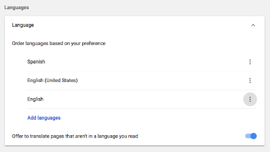
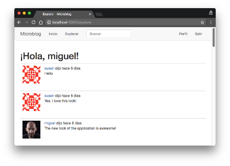

The Flask Mega-Tutorial Part XIII: I18n and L10n (2018)
Posted by
on under(Great news! There is a new version of this tutorial!)
This is the thirteenth installment of the Flask Mega-Tutorial series, in which I'm going to tell you how to expand Microblog to support multiple languages. As part of that effort you will also learn about creating your own CLI extensions to the flask command.
For your reference, below is a list of the articles in this series.
- Chapter 1: Hello, World!
- Chapter 2: Templates
- Chapter 3: Web Forms
- Chapter 4: Database
- Chapter 5: User Logins
- Chapter 6: Profile Page and Avatars
- Chapter 7: Error Handling
- Chapter 8: Followers
- Chapter 9: Pagination
- Chapter 10: Email Support
- Chapter 11: Facelift
- Chapter 12: Dates and Times
- Chapter 13: I18n and L10n (this article)
- Chapter 14: Ajax
- Chapter 15: A Better Application Structure
- Chapter 16: Full-Text Search
- Chapter 17: Deployment on Linux
- Chapter 18: Deployment on Heroku
- Chapter 19: Deployment on Docker Containers
- Chapter 20: Some JavaScript Magic
- Chapter 21: User Notifications
- Chapter 22: Background Jobs
- Chapter 23: Application Programming Interfaces (APIs)
The topics of this chapter are Internationalization and Localization, commonly abbreviated I18n and L10n. To make my application friendly to people who do not speak English, I'm going to implement a translation workflow that, with the help of language translators, will allow me to offer the application to users in a choice of languages.
The GitHub links for this chapter are: Browse, Zip, Diff.
Introduction to Flask-Babel
As you can probably guess, there is a Flask extension that makes working with translations very easy. The extension is called Flask-Babel and is installed with pip:
(venv) $ pip install "flask-babel<3"
This install the latest 2.x release of Flask-Babel. Flask-Babel is initialized like most other Flask extensions:
app/__init__.py: Flask-Babel instance.
# ...
from flask_babel import Babel
app = Flask(__name__)
# ...
babel = Babel(app)
As part of this chapter, I'm going to show you how to translate the application into Spanish, as I happen to speak that language. I could also work with translators that know other languages and support those as well. To keep track of the list of supported languages, I'm going to add a configuration variable:
config.py: Supported languages list.
class Config(object):
# ...
LANGUAGES = ['en', 'es']
I'm using two-letter language codes for this application, but if you need to be more specific, a country code can be added as well. For example, you could use en-US, en-GB and en-CA to support American, British and Canadian English as different languages.
The Babel instance provides a localeselector decorator. The decorated function is invoked for each request to select a language translation to use for that request:
app/__init__.py: Select best language.
from flask import request
# ...
@babel.localeselector
def get_locale():
return request.accept_languages.best_match(app.config['LANGUAGES'])
Here I'm using an attribute of Flask's request object called accept_languages. This object provides a high-level interface to work with the Accept-Language header that clients send with a request. This header specifies the client language and locale preferences as a weighted list. The contents of this header can be configured in the browser's preferences page, with the default being usually imported from the language settings in the computer's operating system. Most people don't even know such a setting exists, but this is useful as users can provide a list of preferred languages, each with a weight. In case you are curious, here is an example of a complex Accept-Languages header:
Accept-Language: da, en-gb;q=0.8, en;q=0.7
This says that Danish (da) is the preferred language (with default weight = 1.0), followed by British English (en-GB) with a 0.8 weight, and as a last option generic English (en) with a 0.7 weight.
To select the best language, you need to compare the list of languages requested by the client against the languages the application supports, and using the client provided weights, find the best language. The logic to do this is somewhat complicated, but it is all encapsulated in the best_match() method, which takes the list of languages offered by the application as an argument and returns the best choice.
Marking Texts to Translate In Python Source Code
Okay, so now comes the bad news. The normal workflow when making an application available in multiple languages is to mark all the texts that need translations in the source code. After the texts are marked, Flask-Babel will scan all the files and extract those texts into a separate translation file using the gettext tool. Unfortunately this is a tedious task that needs to be done to enable translations.
I'm going to show you a few examples of this marking here, but you can get the complete set of changes from the download package for this chapter or the GitHub repository.
The way texts are marked for translation is by wrapping them in a function call that as a convention is called _(), just an underscore. The simplest cases are those where literal strings appear in the source code. Here is an example flash() statement:
from flask_babel import _
# ...
flash(_('Your post is now live!'))
The idea is that the _() function wraps the text in the base language (English in this case). This function will use the language selected by the get_locale() function to find the correct translation for a given client. The _() function then returns the translated text, which in this case will become the argument to flash().
Unfortunately not all cases are that simple. Consider this other flash() call from the application:
flash('User {} not found.'.format(username))
This text has a dynamic component that is inserted in the middle of the static text. The _() function has a syntax that supports this type of texts, but it is based on the older string substitution syntax:
flash(_('User %(username)s not found.', username=username))
There is an even harder case to handle. Some string literals are assigned outside of a request, usually when the application is starting up, so at the time these texts are evaluated there is no way to know what language to use. An example of this is the labels associated with form fields. The only solution to handle those texts is to find a way to delay the evaluation of the string until it is used, which is going to be under an actual request. Flask-Babel provides a lazy evaluation version of _() that is called lazy_gettext():
from flask_babel import lazy_gettext as _l
class LoginForm(FlaskForm):
username = StringField(_l('Username'), validators=[DataRequired()])
# ...
Here I'm importing this alternative translation function and renaming to to _l() so that it looks similar to the original _(). This new function wraps the text in a special object that triggers the translation to be performed later, when the string is used.
The Flask-Login extension flashes a message any time it redirects the user to the login page. This message is in English and comes from the extension itself. To make sure this message also gets translated, I'm going to override the default message and provide my own, wrapper with the _l() function for lazy processing:
login = LoginManager(app)
login.login_view = 'login'
login.login_message = _l('Please log in to access this page.')
Marking Texts to Translate In Templates
In the previous section you've seen how to mark translatable texts in Python source code, but that is only a part of this process, as template files also have text. The _() function is also available in templates, so the process is fairly similar. For example, consider this snippet of HTML from 404.html:
<h1>File Not Found</h1>
The translation enabled version becomes:
<h1>{{ _('File Not Found') }}</h1>
Note that here in addition to wrapping the text with _(), the {{ ... }} needs to be added, to force the _() to be evaluated instead of being considered a literal in the template.
For more complex phrases that have dynamic components, arguments can also be used:
<h1>{{ _('Hi, %(username)s!', username=current_user.username) }}</h1>
There is a particularly tricky case in _post.html that took me a while to figure out:
{% set user_link %}
<a href="{{ url_for('user', username=post.author.username) }}">
{{ post.author.username }}
</a>
{% endset %}
{{ _('%(username)s said %(when)s',
username=user_link, when=moment(post.timestamp).fromNow()) }}
The problem here is that I wanted the username to be a link that points to the profile page of the user, not just the name, so I had to create an intermediate variable called user_link using the set and endset template directives, and then pass that as an argument to the translation function.
As I mentioned above, you can download a version of the application with all the translatable texts in Python source code and templates marked.
Extracting Text to Translate
Once you have the application with all the _() and _l() in place, you can use the pybabel command to extract them to a .pot file, which stands for portable object template. This is a text file that includes all the texts that were marked as needing translation. The purpose of this file is to serve as a template to create translation files for each language.
The extraction process needs a small configuration file that tells pybabel what files should be scanned for translatable texts. Below you can see the babel.cfg that I created for this application:
babel.cfg: PyBabel configuration file.
[python: app/**.py]
[jinja2: app/templates/**.html]
extensions=jinja2.ext.autoescape,jinja2.ext.with_
The first two lines define the filename patterns for Python and Jinja2 template files respectively. The third line defines two extensions provided by the Jinja2 template engine that help Flask-Babel properly parse template files.
To extract all the texts to the .pot file, you can use the following command:
(venv) $ pybabel extract -F babel.cfg -k _l -o messages.pot .
The pybabel extract command reads the configuration file given in the -F option, then scans all the code and template files in the directories that match the configured sources, starting from the directory given in the command (the current directory or . in this case). By default, pybabel will look for _() as a text marker, but I have also used the lazy version, which I imported as _l(), so I need to tell the tool to look for those too with the -k _l. The -o option provides the name of the output file.
I should note that the messages.pot file is not a file that needs to be incorporated into the project. This is a file that can be easily regenerated any time it is needed, simply by running the command above again. So there is no need to commit this file to source control.
Generating a Language Catalog
The next step in the process is to create a translation for each language that will be supported in addition to the base one, which in this case is English. I said I was going to start by adding Spanish (language code es), so this is the command that does that:
(venv) $ pybabel init -i messages.pot -d app/translations -l es
creating catalog app/translations/es/LC_MESSAGES/messages.po based on messages.pot
The pybabel init command takes the messages.pot file as input and writes a new language catalog to the directory given in the -d option for the language specified in the -l option. I'm going to be installing all the translations in the app/translations directory, because that is where Flask-Babel will expect translation files to be by default. The command will create a es subdirectory inside this directory for the Spanish data files. In particular, there will be a new file named app/translations/es/LC_MESSAGES/messages.po, that is where the translations need to be made.
If you want to support other languages, just repeat the above command with each of the language codes you want, so that each language gets its own repository with a messages.po file.
This messages.po file that created in each language repository uses a format that is the de facto standard for language translations, the format used by the gettext utility. Here are a few lines from the beginning of the Spanish messages.po:
# Spanish translations for PROJECT.
# Copyright (C) 2021 ORGANIZATION
# This file is distributed under the same license as the PROJECT project.
# FIRST AUTHOR <EMAIL@ADDRESS>, 2021.
#
msgid ""
msgstr ""
"Project-Id-Version: PROJECT VERSION\n"
"Report-Msgid-Bugs-To: EMAIL@ADDRESS\n"
"POT-Creation-Date: 2021-06-29 23:23-0700\n"
"PO-Revision-Date: 2021-06-29 23:25-0700\n"
"Last-Translator: FULL NAME <EMAIL@ADDRESS>\n"
"Language: es\n"
"Language-Team: es <LL@li.org>\n"
"Plural-Forms: nplurals=2; plural=(n != 1)\n"
"MIME-Version: 1.0\n"
"Content-Type: text/plain; charset=utf-8\n"
"Content-Transfer-Encoding: 8bit\n"
"Generated-By: Babel 2.5.1\n"
#: app/email.py:21
msgid "[Microblog] Reset Your Password"
msgstr ""
#: app/forms.py:12 app/forms.py:19 app/forms.py:50
msgid "Username"
msgstr ""
#: app/forms.py:13 app/forms.py:21 app/forms.py:43
msgid "Password"
msgstr ""
If you skip the header, you can see that what follows is a list of strings that were extracted from the _() and _l() calls. For each text, you get a reference to the location of the text in your application. Then the msgid line contains the text in the base language, and the msgstr line that follows contains an empty string. Those empty strings need to be edited to have the version of the text in the target language.
There are many translation applications that work with .po files. If you feel comfortable editing the text file, then that's sufficient, but if you are working with a large project it may be recommended to work with a specialized editor. The most popular translation application is the open-source poedit, which is available for all major operating systems. If you are familiar with vim, then the po.vim plugin gives some key mappings that make working with these files easier.
Below you can see a portion of the Spanish messages.po after I added the translations:
#: app/email.py:21
msgid "[Microblog] Reset Your Password"
msgstr "[Microblog] Nueva Contraseña"
#: app/forms.py:12 app/forms.py:19 app/forms.py:50
msgid "Username"
msgstr "Nombre de usuario"
#: app/forms.py:13 app/forms.py:21 app/forms.py:43
msgid "Password"
msgstr "Contraseña"
The download package for this chapter also contains this file with all the translations in place, so that you don't have to worry about that part for this application.
The messages.po file is a sort of source file for translations. When you want to start using these translated texts, this file needs to be compiled into a format that is efficient to be used by the application at run-time. To compile all the translations for the application, you can use the pybabel compile command as follows:
(venv) $ pybabel compile -d app/translations
compiling catalog app/translations/es/LC_MESSAGES/messages.po to
app/translations/es/LC_MESSAGES/messages.mo
This operation adds a messages.mo file next to messages.po in each language repository. The .mo file is the file that Flask-Babel will use to load translations for the application.
After you create the messages.mo file for Spanish or any other languages you added to the project, these languages are ready to be used in the application. If you want to see how the application looks in Spanish, you can edit the language configuration in your web browser to have Spanish as the preferred language. For Chrome, this is the Advanced part of the Settings page:

If you prefer not to change your browser settings, the other alternative is to force a language by making the localeselector function always return it. For Spanish, this would be how you would do it:
app/__init__.py: Select best language.
@babel.localeselector
def get_locale():
# return request.accept_languages.best_match(app.config['LANGUAGES'])
return 'es'
Running the application with the browser configured for Spanish, or the localeselector function returning es will make all the texts appear in Spanish when you use the application.
Updating the Translations
One common situation when working with translations is that you may want to start using a translation file even if it is incomplete. That is totally fine, you can compile an incomplete messages.po file and any translations that are available will be used, while any missing ones will use the base language. You can then continue working on the translations and compile again to update the messages.mo file as you make progress.
Another common scenario occurs if you missed some texts when you added the _() wrappers. In this case you are going to see that those texts that you missed are going to remain in English, because Flask-Babel knows nothing about them. In this situation you'll want to add the _() or _l() wrappers when you detect texts that don't have them, and then do an update procedure, which involves two steps:
(venv) $ pybabel extract -F babel.cfg -k _l -o messages.pot .
(venv) $ pybabel update -i messages.pot -d app/translations
The extract command is identical to the one I issued earlier, but now it will generate a new version of messages.pot with all the previous texts plus anything new that you recently wrapped with _() or _l(). The update call takes the new messages.pot file and merges it into all the messages.po files associated with the project. This is going to be an intelligent merge, in which any existing texts will be left alone, while only entries that were added or removed in messages.pot will be affected.
After the messages.po are updated, you can go ahead and translate any new tests, then compile the messages one more time to make them available to the application.
Translating Dates and Times
Now I have a complete Spanish translation for all the texts in Python code and templates, but if you run the application in Spanish and are a good observer, you will notice that there are still a few things that appear in English. I'm referring to the timestamps generated by Flask-Moment and moment.js, which obviously have not been included in the translation effort because none of the texts generated by these packages are part of the source code or templates of the application.
The moment.js library does support localization and internationalization, so all I need to do is configure the proper language. Flask-Babel returns the selected language and locale for a given request via the get_locale() function, so what I'm going to do is add the locale to the g object, so that I can then access it from the base template:
app/routes.py: Store selected language in flask.g.
# ...
from flask import g
from flask_babel import get_locale
# ...
@app.before_request
def before_request():
# ...
g.locale = str(get_locale())
The get_locale() function from Flask-Babel returns a locale object, but I just want to have the language code, which can be obtained by converting the object to a string. Now that I have g.locale, I can access it from the base template to configure moment.js with the correct language:
app/templates/base.html: Set locale for moment.js.
...
{% block scripts %}
{{ super() }}
{{ moment.include_moment() }}
{{ moment.lang(g.locale) }}
{% endblock %}
And now all dates and times should appear in the same language as the text. Below you can see how the application looks in Spanish:

At this point, all texts except those that were provided by the user in blog posts or profile descriptions should be translatable into other languages.
Command-Line Enhancements
You will probably agree with me that the pybabel commands are a bit long and difficult to remember. I'm going to use this opportunity to show you how you can create custom commands that are integrated with the flask command. So far, you've seen me use flask run, flask shell, and several flask db sub-commands provided by the Flask-Migrate extension. It is actually easy to add application-specific commands to flask as well. So what I'm going to do now is create a few simple commands that trigger the pybabel commands with all the arguments that are specific to this application. The commands that I'm going to add are:
flask translate init LANGto add a new languageflask translate updateto update all language repositoriesflask translate compileto compile all language repositories
The babel export step is not going to be a command, because generating the messages.pot file is always a pre-requisite to running either the init or the update commands, so the implementation of these commands will generate the translation template file as a temporary file.
Flask relies on Click for all its command-line operations. Commands like translate, which are a root for several sub-commands are created via the app.cli.group() decorator. I'm going to put these commands in a new module called app/cli.py:
app/cli.py: Translate command group.
from app import app
@app.cli.group()
def translate():
"""Translation and localization commands."""
pass
The name of the command comes from the name of the decorated function, and the help message comes from the docstring. Since this is a parent command that only exists to provide a base for the sub-commands, the function itself does not need to do anything.
The update and compile are easy to implement, because they do not take any arguments:
app/cli.py: Update and compile sub-commands.
import os
# ...
@translate.command()
def update():
"""Update all languages."""
if os.system('pybabel extract -F babel.cfg -k _l -o messages.pot .'):
raise RuntimeError('extract command failed')
if os.system('pybabel update -i messages.pot -d app/translations'):
raise RuntimeError('update command failed')
os.remove('messages.pot')
@translate.command()
def compile():
"""Compile all languages."""
if os.system('pybabel compile -d app/translations'):
raise RuntimeError('compile command failed')
Note how the decorator from these functions is derived from the translate parent function. This may seem confusing, since translate() is a function, but it is the standard way in which Click builds groups of commands. Same as with the translate() function, the docstrings for these functions are used as help message in the --help output.
You can see that for all commands, I run them and make sure that the return value is zero, which implies that the command did not return any error. If the command errors, then I raise a RuntimeError, which will cause the script to stop. The update() function combines the extract and update steps in the same command, and if everything is successful, it deletes the messages.pot file after the update is complete, since this file can be easily regenerated when needed again.
The init command takes the new language code as an argument. Here is the implementation:
app/cli.py: Init sub-command.
import click
@translate.command()
@click.argument('lang')
def init(lang):
"""Initialize a new language."""
if os.system('pybabel extract -F babel.cfg -k _l -o messages.pot .'):
raise RuntimeError('extract command failed')
if os.system(
'pybabel init -i messages.pot -d app/translations -l ' + lang):
raise RuntimeError('init command failed')
os.remove('messages.pot')
This command uses the @click.argument decorator to define the language code. Click passes the value provided in the command to the handler function as an argument, and then I incorporate the argument into the init command.
The final step to enable these commands to work is to import them, so that the commands get registered. I decided to do this in the microblog.py file in the top-level directory:
microblog.py: Register command-line commands.
from app import cli
Here the only thing I need to do is import the new cli.py module, there is no need to do anything with it, as the import causes the command decorators to run and register the command.
At this point, running flask --help will list the translate command as an option. And flask translate --help will show the three sub-commands that I defined:
(venv) $ flask translate --help
Usage: flask translate [OPTIONS] COMMAND [ARGS]...
Translation and localization commands.
Options:
--help Show this message and exit.
Commands:
compile Compile all languages.
init Initialize a new language.
update Update all languages.
So now, the workflow is much simpler and there is no need to remember long and complicated commands. To add a new language, you use:
(venv) $ flask translate init <language-code>
To update all the languages after making changes to the _() and _l() language markers:
(venv) $ flask translate update
And to compile all languages after updating the translation files:
(venv) $ flask translate compile
Become a Patron!
Hello, and thank you for visiting my blog! If you enjoyed this article, please consider supporting my work on this blog on Patreon!

-
#176 Ryan said
Hello Miguel,
About updating the translation. I will need to "pybabel extract" again and perform "pybabel update".
Do i also need to do the init "pybabel init -i messages.pot -d app/translations -l es" before i compile? Or we can skip the init step in future once it is already initialized?Thanks.
-
#177 Miguel Grinberg said
@Ryan: the init command is used when you start a new language.
-
#178 soha said
Hi Miguel...
flask translate init<language-code>
bash: syntax error near unexpected token `newline'
what can i do, please answer me!!!
-
#179 Miguel Grinberg said
@soha: the text
<language-code>has to be replaced with an actual language code that you want to add translations for. Also, there should be a space between the word "init" and your chosen language code. Have you done that? -
#180 Andy said
Thank you very much for your work. I'm learning so much from it. As soon as i can, i will buy your updated Tutorial!
-
#181 Hamid Allaoui said
Thanks for this great tutorial.
-
#182 Asif Iqbal said
Hi Miguel. Thank you for the great tutorial. I learnt a lot from this tutorial about Flask so far.
I had a question however. Is there any way to localize the language of the email we will be sending? The html and the text file?
-
#183 Miguel Grinberg said
@Asif: If you store a preferred language for each user, then you can select from a list of Jinja templates to use for the email.
-
#184 Asif Iqbal said
But while sending the password reset mail, we have access to the app instance, from which we can get the preferred language automatically.
So is it possible to pass the language to send_email() function of app.email and modify templates accordingly in the function, or maybe change the templates on the fly while passing text_body and html_body arguments?
-
#185 Miguel Grinberg said
@Asif: The language that you get from the request context is associated with the browser's language setting the user configured. You can use that language for the email if you like, but I think outside of the browser it would be a better solution to allow the user to select which language they want communications on. Using the browser language could be a good default when the user did not explicitly configure a language.
-
#186 Muhammad said
Hi Miguel. Thank you for the great tutorial.
about CLI. when I did the code in cli.py then run flask translate --help
it gave me Error: No such command
but when I put the code in init.py it worked perfectly.
I did every thing as your code.
but I don't know what is my fault. -
#187 Miguel Grinberg said
@Muhammad: well, you didn't do everything as I did, you have missed a step. My guess is that you are not importing the cli.py file, so Flask doesn't know it exists.
-
#188 lungsang said
@Miguel Grinberg: Below is my init.py codes and its not translating the web application. Please have a look.
I have already generated messages.pot, po, and mo. Thank you.import os
from pickle import NONE
from flask import Flask, g , request
from config import config
from flask_compress import Compress
from flask_login import LoginManager
from flask_mail import Mail
from flask_sqlalchemy import SQLAlchemy
from flask_wtf import CSRFProtect
from flaskext.markdown import Markdown
from flask_babel import Babelbasedir = os.path.abspath(os.path.dirname(file))
mail = Mail()
<h1>Set up Flask-Login</h1>
db = SQLAlchemy()
csrf = CSRFProtect()
compress = Compress()login_manager = LoginManager()
login_manager.session_protection = 'strong'
login_manager.login_view = 'account.login'app = Flask(
name,
template_folder=config["dev"].template_folder,
static_folder=config["dev"].static_folder,
static_url_path="/statics"
)
def create_app(config_name="dev"):
""" Create the application """if not isinstance(config_name, str): app.config.from_object(config) else: app.config.from_object(config[config_name]) app.config['SQLALCHEMY_TRACK_MODIFICATIONS'] = False config[config_name].init_app(app) # Set up extensions mail.init_app(app) db.init_app(app) login_manager.init_app(app) #csrf.init_app(app) compress.init_app(app) md = Markdown(app, safe_mode=True) #assets_env = Environment(app) # Register Jinja template functions from .main import main as main_blueprint app.register_blueprint(main_blueprint) from .account import account as account_blueprint app.register_blueprint(account_blueprint, url_prefix='/account') from .admin import admin as admin_blueprint app.register_blueprint(admin_blueprint, url_prefix='/admin') from .configurations import configuration as configurations_blueprint app.register_blueprint(configurations_blueprint) from .control_lists import control_lists_bp app.register_blueprint(control_lists_bp) return appbabel = Babel(app)
@babel.localeselector
def get_locale():
return 'es' -
#189 Miguel Grinberg said
@lungsang: This isn't the code of this tutorial, so I can't really say. Have you translated the application to Spanish? Any texts that you don't translate will be shown in the original language.
-
#190 Sohbet Gurbanov said
Hello Miguel, thank you for your good tutorial, i have a question about Flask-babel. What if i want to translate strings from database? How it should be can you answer please??
-
#191 Miguel Grinberg said
@Sohbet: Babel scans source code for the text to translate, so I think you will need to create an internal source code file with a dump of all the texts that you have in your database to add them to the language catalogs so that they can be translated.
-
#192 Frank said
Hello Miguel, thank you for the tutorial
When I try to create the file babel.cfg on my microblog folder, I get an Access Denied error message but I am allowed to create with any other name so I created mine with babe.cfg but when I tried to extract it to a .pot file I get the error messageTraceback (most recent call last): File "C:\Program Files\WindowsApps\PythonSoftwareFoundation.Python.3.7_3.7.2544.0_x64__qbz5n2kfra8p0\lib\runpy.py", line 193, in _run_module_as_main "__main__", mod_spec) File "C:\Program Files\WindowsApps\PythonSoftwareFoundation.Python.3.7_3.7.2544.0_x64__qbz5n2kfra8p0\lib\runpy.py", line 85, in _run_code exec(code, run_globals) File "C:\Users\HP\microblog\venv\Scripts\pybabel.exe\__main__.py", line 7, in <module> File "c:\users\hp\microblog\venv\lib\site-packages\babel\messages\frontend.py", line 929, in main return CommandLineInterface().run(sys.argv) File "c:\users\hp\microblog\venv\lib\site-packages\babel\messages\frontend.py", line 853, in run return cmdinst.run() File "c:\users\hp\microblog\venv\lib\site-packages\babel\messages\frontend.py", line 481, in run for filename, lineno, message, comments, context in extracted: File "c:\users\hp\microblog\venv\lib\site-packages\babel\messages\extract.py", line 157, in extract_from_dir dirpath=absname, File "c:\users\hp\microblog\venv\lib\site-packages\babel\messages\extract.py", line 212, in check_and_call_extract_file strip_comment_tags=strip_comment_tags File "c:\users\hp\microblog\venv\lib\site-packages\babel\messages\extract.py", line 244, in extract_from_file options, strip_comment_tags)) File "c:\users\hp\microblog\venv\lib\site-packages\babel\messages\extract.py", line 325, in extract for lineno, funcname, messages, comments in results: File "c:\users\hp\microblog\venv\lib\site-packages\jinja2\ext.py", line 808, in babel_extract extensions[import_string(extension_name)] = None File "c:\users\hp\microblog\venv\lib\site-packages\jinja2\utils.py", line 149, in import_string return getattr(__import__(module, None, None, [obj]), obj) AttributeError: module 'jinja2.ext' has no attribute 'autoescape' -
#193 Miguel Grinberg said
@Frank: Try downgrading Jinja to a version 2.x. Jinja 3 deprecated some things and I haven't had a chance to update this chapter yet.
-
#194 Konstantin said
Hi Miguel,
According to the Jinja2 documentation: "Changed in version 2.9: This extension is now built-in and no longer does anything." for both jinja2.ext.autoescape,jinja2.ext.with_
Regards,
Kosntantin -
#195 Towfiq said
Hi Miguel,
I'm having a problem. I'm trying to show a message in Email() validation, i can compile it to messages.mo file but the translated text is not rendering in page. any suggestion how to fix that?
Thanks. -
#196 Miguel Grinberg said
@Towfiq: what do you mean by "Email() validation"?
-
#197 Towfiq said
in auth.forms.py file im using this custom message Email(message=_l('Please enter a valid email address.'))
sorry for incomplete question. -
#198 Miguel Grinberg said
@Towliq: This is covered above. See the
lazy_gettext()function. -
#199 Olav said
Hi Miguel. I made my first flask appliaction in 2016, based on the older tutorial. All my projects since then are based on that setup. Now I'm trying to integrate languages. Everything works fine until the messages.mo file is compiled. But the translation does not show. I've tried: restarting the application, double checking that I actually made a translation in messages.po (and re-compiling the messages.mo), forcing the language to translate into in get_locale() - Anything else I can try?
-
#200 Miguel Grinberg said
@Olav: Are you trying this on your own project or on the project from this tutorial? Try the tutorial project, translations work on this project.